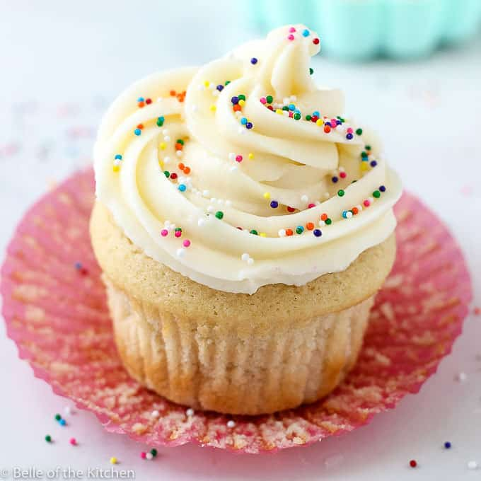

Cupcake Recipe
History of Cupcakes
Cupcakes originated in America and were invented by Amelia Simmons in 1796. Cupcakes at the time were called "Number cakes" or "1234 Cakes".
Cupcakes started to become popular in 1919 when a company called Hostess started to mass produce and distribute them.
Each year in december 15th is the day when we celebrate national cupcake day and in May 8 we celebrate national give someone a cupcake day.
On average, about 800 million cupcakes are consumed each year.
This is a simple recipe of vanilla cupcakes with vanilla frosting.
Ingredients
- (375 ml) 1 1/2 cups of all-purpose flower
- (7.5ml) 1 1/2 tsp of baking powder
- (2.5ml) 1/2 tsp of salt
- (125ml) 1/2 cup of unsalted butter, at room temperature
- (250ml) 1 cup of granulated sugar
- 2 eggs, at room temperature
- (175ml) 3/4 cups of milk
- (10ml) 2 tsp of vanilla extract
Optional:Frosting
- (125ml) 1/2 cup of unsalted butter, at room temperature
- (1L) 4 cups of icing sugar
- (60ml) 1/4 cup of whipping cream
- (10ml) 2 tsp of vanilla extract
- Pinch of Salt
Directions
- Preheat oven to 350°F. Line 12 muffin cups with paper liners.
- Whisk together the flour, baking poweder, and salt in a bowl.; set aside
- In a seperate bowl, using an electrical mixer beat butter and sugar until it's light and fluffy.
- Beat in eggs, one at a time, fully mixing one before adding the next one; beat in vanilla
- With mixer on low speed, add flour mixture in 3 parts alternately with milk in 2 parts, starting and ending with flour mixture, and scraping bowl as needed between additions
- Scoop or scoop batter into prepared muffin cups, about two-thirds full.
- Bake for 18-20 minutes or until tester comes out clean when inserted into centre of cupcakes. Let cool completely on rack.
Directions: Frosting
- Beat butter until light and fluffy.
- With mixer on low speed, beat in icing sugar, cream, vanilla and salt until smooth, adding up to 2 tbsp (30ml) more cream if needed
- Increase speed to high; beat for 1-2 minutes or until frosting is light and fluffy
- Add frosting to piping bag fitted with round tip; pipe over cupcakes
- Or you spoon frosting into resealable bag and clip one corner to pipe over cupcakes

Reference List Entry
Author: Kourosh Tabandeh, year: Unavailable, Title: History of Cupcakes, "History of Cupcake website"